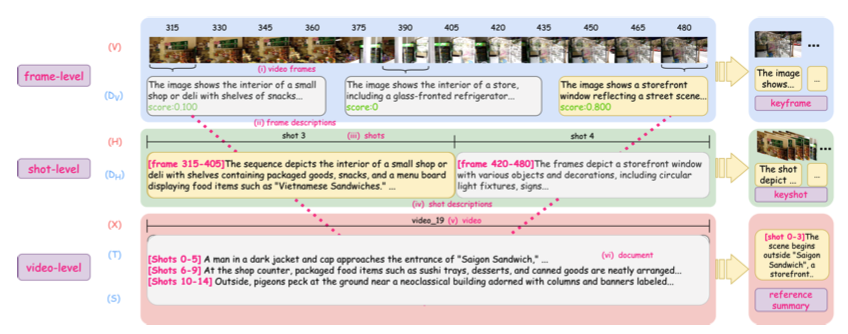
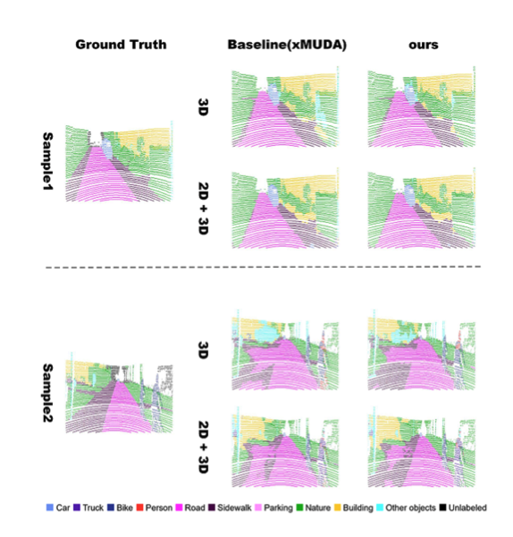

Mengqi Shi
PhD Student · University of Hawaiʻi at Mānoa
Advised by Prof. Haopeng Zhang
I am a PhD student at the University of Hawaiʻi at Mānoa, broadly interested in AI with a focus on multimodal learning and video understanding. Before my PhD, I spent two and a half years as an AI Engineer at the SINOPEC Institute of Safety Engineering, where I had the opportunity to bridge AI research with real-world engineering practice. I hold a Master's degree from Nanyang Technological University (Singapore) and a Bachelor's degree from Southeast University (China).
News
Publications
2026

HAVEN: Hierarchically Aligned Multimodal Benchmark for Unified Video Understanding
arXiv preprint arXiv:2605.19223, 2026
2022

17th International Conference on Control, Automation, Robotics and Vision (ICARCV), IEEE, 2022
CV
Education
Ph.D. in Computer Science
Advisor: Prof. Haopeng Zhang
M.S. in Computer Control and Automation
Advisor: Prof. Xie Lihua
B.E. in Automation
Experience
AI Engineer
Bridging AI research with industrial engineering applications. Authored 4 patents on intelligent systems.
Teaching
Programming Language Theories
Introduction to Computer Science · Lab Lecturer
Human-Computer Interaction Systems
Beyond Research
Outside of research, I keep a personal space — TEMPO — where I document photography, crochet, incense, and the slow texture of everyday life.
tempo-see.github.io →